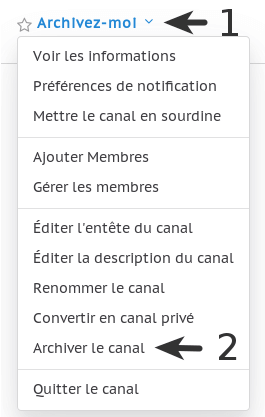
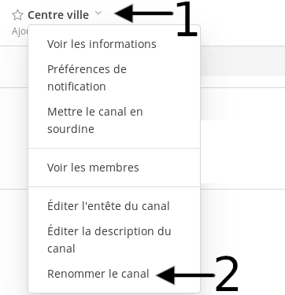

Paramètres du canal #
Les préférences de notification, l’en-tête du canal et le sujet du canal sont personnalisables pour chaque canal.
Préférences de notification des canaux #
Les préférences de notification peuvent être modifiées pour chaque canal dont vous êtes membre.
Envoyer les notifications #
Par défaut, les préférences des notifications de bureau définies dans Paramètres du compte sont utilisées pour tous les canaux. Pour personnaliser les notifications de bureau pour chaque canal, cliquez sur le nom du canal en haut du panneau central pour accéder au menu déroulant, puis cliquez sur Préférences de notifications > Envoyer des notifications de bureau.
Marquer les canaux non lus #
Personnalisez les événements qui affichent le nom des canaux en gras dans le menu déroulant puis dans Préférences de notification > Marquer les canaux non lus.
En-tête du canal #
L’en-tête du canal est le texte qui apparaît à côté du nom du canal en haut de l’écran. Il peut être utilisé pour résumer le sujet du canal, ou pour fournir un lien vers les documents fréquemment consultés. N’importe quel membre du canal peut modifier l’en-tête en cliquant sur le nom du canal en haut du panneau central pour accéder au menu déroulant, puis en cliquant sur Éditer la description du canal boite de dialogue.
Description du canal #
Ce texte apparaît dans la liste des canaux dans le menu Plus et aide les utilisateur·trice·s à décider de rejoindre le canal ou non. N’importe quel membre du canal peut modifier la description du canal en cliquant sur le nom du canal en haut du panneau central pour accéder au menu déroulant, puis en cliquant sur Éditer la description du canal boite de dialogue.
Renommer un canal #
Il est possible de renommer un canal et/ou d’en changer l’adresse. Pour ce faire :
- cliquez sur le nom du canal en haut du panneau central pour accéder au menu déroulant
- cliquez sur Renommer le canal
- indiquez le nom d’affichage et/ou l’adresse du canal (vous pouvez utiliser des lettres minuscules, nombres, points, tirets et tirets bas (underscores))
- cliquez sur le bouton Enregistrer
Convertir en canal privé #
Lorsque vous convertissez un canal en canal privé, l’historique et l’appartenance des membres sont conservés. Les fichiers partagés publiquement restent accessibles à toute personne disposant du lien. Adhérer à un canal privé n’est possible que sur invitation.
Le changement est permanent et ne peut pas être annulé.
Il est possible de convertir un canal public en canal privé. Pour ce faire :
- cliquez sur le nom du canal en haut du panneau central pour accéder au menu déroulant
- cliquez sur Convertir en canal privé
- cliquez sur le bouton Oui, convertir en canal privé
Archiver un canal #
Vous pouvez archiver un canal : cela ne le supprimera pas complètement mais le masquera et le rendra inaccessible aux membres de l’équipe. Il ne sera possible de le restaurer qu’en nous le demandant.
Merci de privilégier ce fonctionnement : demander la suppression d’un canal demande plusieurs manipulations laborieuses à notre équipe alors que cela revient sensiblement au même pour vous de simplement l'archiver.
Pour archiver un canal vous devez :
- cliquer sur l’icône à côté du nom du canal
-
cliquer sur Archiver le canal.

-
une popup s’ouvrira avec la question :
Ceci va archiver le canal de l’équipe et rendre son contenu inaccessible de tous les utilisateurs. Voulez-vous vraiment archiver le canal ?
-
cliquer Archiver.
Quitter un canal #
Si vous quittez un canal privé vous devrez vous faire inviter à nouveau !
Pour quitter un canal vous devez :
- vous rendre sur le canal à quitter
- cliquer sur le nom du canal en haut de la page
- cliquer sur Quitter le canal
Renommer un canal #
Vous avez la possibilité de renommer un canal tout en gardant l’adresse inchangée, ou en changeant aussi l’adresse. Cela peut être utile si vous souhaitez changer le nom affiché du canal mais voulez garder l’adresse que vous avez déjà distribué, ou pour changer le nom du canal Centre Ville par autre chose.
Le canal Centre Ville ne peut pas être archivé ou supprimé et il n’est pas possible de changer son adresse non plus.
Pour renommer un canal, vous devez :
- cliquer sur
- cliquer sur Renommer le canal
- modifier Nom d’affichage
- OPTIONNEL : changer l’url
- cliquer sur Enregistrer
